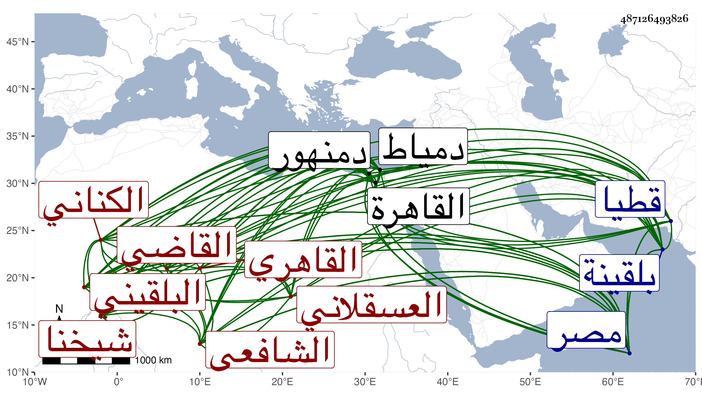

0902Sakhawi.DawLamic.ITO20230111-ara1.EIS1600.487126493826
Biography ID: 487126493826
1199
صالح بن عمر بن رسلان بن نصير بن صالح شيخنا القاضي علم الدين أبو البقاء بن شيخ الاسلام السراج أبي حفص الكناني العسقلاني البلقيني الأصل القاهري الشافعي وأول من سكن بلقينة من أصوله صالح الأعلى . ولد في ليلة الاثنين ثالث عشر جمادى الأولى سنة إحدى وتسعين وسبعمائة بالقاهرة ، ونشأ بها في كنف والده فحفظ القرآن ، وصلى به للناس التراويح على العادة بمدرسة والده في سنة تسع وتسعين ، والعمدة وألفية النحو ومنهاج الأصول والتدريب لأبيه إلى النفقات والمنهاج من ثم إلى آخره ، وعرض بعض محافيظه على أبيه والزين العراقي وجماعة وجميعها على أخيه وكان أحيانا يرمل الفتاوي بين يدي والده وحضر دروسه وصحح عليه في التدريب ، وكان متصونا متقللا من الدنيا غاية في الذكاء وسرعة الحفظ فلازم الاشتغال في الفقه وأصوله والعربية والحديث وغيرها من العلوم ، وانتفع في ذلك كله بأخيه خصوصا حين عزله بالهروي حتى كان جل انتفاعه به وكتب بخطه من تصانيفه جملة وقرأها عليه ، وكذا أخذ في الفقه وغيره عن المجد البرماوي والبيجوري والشمس الغراقي ، وفي الأصول عن العز بن جماعة ، وفي النحو عن الشمس الشطنوفي وفي الحديث عن الولي العراقي وشيخنا وقرأ عليهما في محاسن الاصطلاح لوالده ، وكتب عن الزين العراقى مجالس من أماليه بحضور الهيثمي ورأيت المملي أثبت اسمه في بعضها وسمع على والده جزء الجمعة للنسائي وختم دلائل النبوة للبيهقي وأشياء وعلى الشهاب بن حجي جزء ابن بخيد ، بل قرأ هو عليه بعض مشيخة الفخر وسمع على أخيه عشارياته تخريج شيخنا أبي النعيم المستملي وغير ذلك في آخرين كالجمال بن الشرائحي ، وأجاز له التنوخي وآخرون باستدعاء شيخنا وغيره . وحج في سنة أربع عشرة ولقي الحافظ الجمال بن ظهيرة وغيره ، ودخل دمياط فما دونها ولم يزل ملازما لأخيه حتى تقدم وأذن له في الافتاء والتدريس بعد عزل الهروي وعوده إلى القضاء ، ووصفه بالعالم المفنن ، وخطب بالمشهد الحسيني حين أحدث فيه ابن النسخة الخطبة ليتمرن فيها وبغيره ، وقرأ البخاري عند الأمير اينال الصصلاي وألبسه يوم الختم خلعة ، وعاونه حتى استقر في توقيع الدست كما وقع لأخويه وناب في القضاء عن أخيه بدمنهور وأنشده بعض أهل الأدب عقب عمله ميعادا بالنحرارية :
| وعظ الأنام إمامنا الحبر الذي | سكب العلوم كبحر فضل طافح |
| فشفا القلوب بعلمه وبوعظه | والوعظ لا يشفى سوى من صالح |
وغيرها ودرس الفقه وهو شاب بالمدرسة الملكية تلقاها عن ابن أبي الفتح البلقيني قبل العشرين ثم رغب له أخوه عن درس التفسير والميعاد بالبرقوقية في سنة احدى وعشرين وعمل فيها إذ ذاك إجلاسا حافلا ارتفع ذكره به وكذا نوه أخوه بذكره في مناظرات الهروي بحيث أن القاضي كان يخبر أن المؤيد رام أن يوليه القضاء عوضا عن أخيه فما أجاب حياء منه وأدبا معه وقدمه أخوه أيضا لخطبة العيد بالسلطان الظاهر ططر حين سافر معه وبرز صاحب الترجمة لتلقيه من قطيا فوجد أخاه ضعيفا جدا وصادف ارسال السلطان يأمره أن يتجشم المشقة في الخطبة به لكونه أول عيد من سلطنته والا فليعين من يصلح فكان هو الصالح فخطب حينئذ السلطان بالعسكر فأعجبهم جهورية صوته واستقر في أنفسهم أنه عالم ولذلك لما مات أخوه استقر عوضه في تدريس الخشابية والنظر عليها وحضر عنده فيه الكبار من شيوخه وغيرهم واستمر فيها حتى مات ، ورام الظاهر اخراجهما عنه مرة بعد أخرى بل رام اخراجه من مصر جملة فما مكنه الله من ذلك كله ثم استقر بعد صرف شيخه الولي العراقي في قضاء الشافعية بالديار المصرية في سادس ذي الحجة سنة ست وعشرين فأقام سنة وأكثر من شهر وصرف ، وتكرر عوده لذلك ثم صرفه حتى كانت مدة ولايته في مجموع المرار وهي سبع ثلاث عشرة سنة ونصف سنة وعقد الميعاد بمدرستهم وولي تدريس الحديث بالقانبهية والميعاد والافتاء بالحسنية والفقه بالشريفية بمصر مع نظرها ونظر الخانقاه البيبرسية وجامع الحاكم كما بينت كل ذلك في المعجم والذيل لرفع الأصر ، وكان اماما فقيها عالما قوي الحافظة سريع الادراك طلق العبارة فصيحا يتحاشى عدم الأعراب في مخاطباته بحيث لا يضبط عليه في ذلك شاذة ولا فاذة حسن الإعتقاد في الصالحين كثير التودد اليهم بساما بشوشا طلق المحيا فاشيا للسلام مهابا له جلالة ووقع في صدور الخاصة والعامة لطيف المحاضرة فكها ذاكرا لكثير من المتون والفوائد الحديثية والمبهمات التي حصلها حين كان أخوه يقدمه لمناظرة الهروي مستحضرا لجملة من الرقائق والمواعظ والاشعار وكذا الوقائع والحوادث العلمية سمحا بعارية الكتب باذلا لجاهه وأنشأ بقلمه ولسانه حتى كان بعض الفضلاء يقول إن الحضور بين يديه من المفرحات شهما مقداما لا يهاب ملكا ولا أميرا ذا بادرة ربما تؤدي إلى لومه سريع الغضب والرجوع والدمعة والكتابة سليم الصدر لا يتوقف عن قبول من اعتذر إليه معرضا من تتبع زلات من يناوئه غير مشتغل بتنقيصه بل ربما يمنع من يشتغل في مجلسه بذلك ، وهو في آخر عمره في غالب ما أشرت إليه أحسن حالا فيه قبله خصوصا في التواضع والاعتراف بالتقصير ومزيد المداراة غير متأنق في مأكله وملبسه متغافلا عما يحصله أتباعه بجاهه غير سائل عنه يقنع باليسير مما يهدي إليه إلى غير ذلك مما يطول شرحه ولشاعر الوقت النواجي فيه عدة قصائد وكذا لغيره من الفضلاء ، وقد تصدى لنشر العلم قديما وكذا للوعظ والافتاء وحضر مجلس وعظه السادة من الشيوخ والرفاق وطارت فتاويه في الآفاق ، وأخذ عنه الفضلاء من كل ناحية طقة بعد أخرى حتى صار أكثر الفضلاء من تلامذته وكذا حدث بأشياء واشتهر اسمه وبعد صيته ، وكان القاياتي يقول انه تخطى الناس بحفظ التدريب وصنف تفسيرا وشرحا على البخاري لم يكمله وأفرد فتاوي أبيه والمهم من فتاوي نفسه والتقط حواشي أخيه على الروضة بل جمع بين حواشي أبيه وأخيه عليها وأفرد كلا من ترجمته وترجمة والده وأكمل تدريب أبيه وبيض ما كتبه أبوه على المهمات ، وله القول المفيد في اشتراط الترتيب بين كلمتي التوحيد والخطب والتذكرة وغيرهما مما أثبته في الكتابين المشار اليهما وله نظم ونثر قد يقع في كل منهما الوسط وقد قرأت عليه أشياء وحضرت دروسه وأذن لي بالتدريس والافتاء وربما أرسل الي بالفتاوي وقرض لي غير تصنيف وكان يجلني ويقدمني على سائر الجماعة بل ويثني على سائر الأهل كالأبوين والعمين والجدين للأب والأم والخال ، واستمر على جلالته وعلو مكانته حتى مات بعد أن توعك قليلا في يوم الأربعاء خامس رجب سنة ثمان وستين وصلى عليه من الغد بجامع الحاكم في محضر جم تقدمهم ابن الشحنة القاضي الحنفي ودفن بجوار والده بمدرسته الشهيرة وأقاموا على قبره أياما يقرؤن وتأسف الناس على فقده ، ولم يخلف بعده مثله رحمه الله وإيانا .
